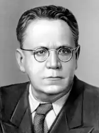
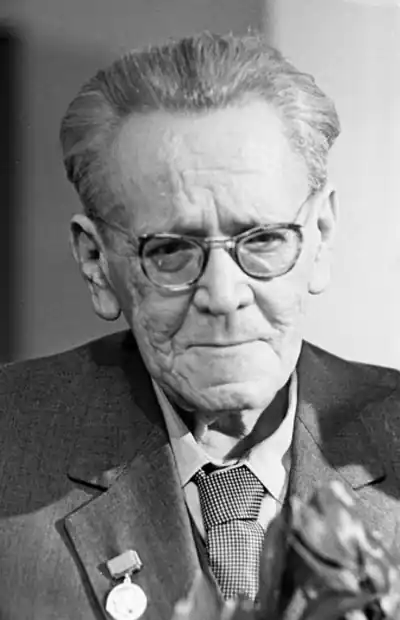
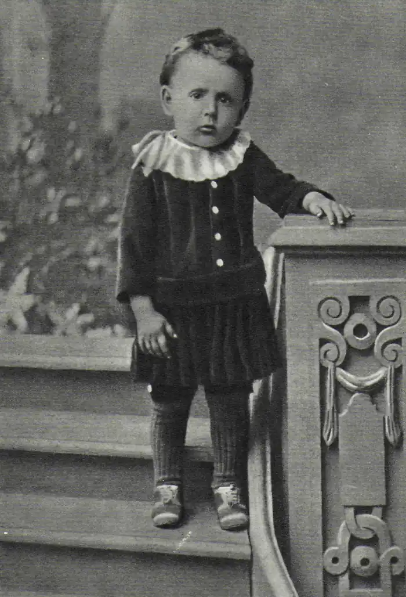
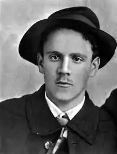
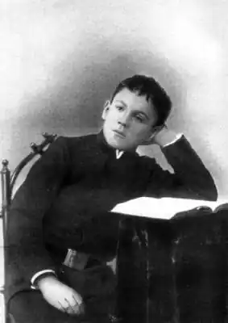

Самуїл Якович Маршак — російсько-радянський поет, відомий драматург, літературний критик і перекладач, лауреат Ленінської і кількох Сталінських премій.
Дитинство
Народився Самуїл Якович в єврейській родині. Батько, Яків Миронович, працював на миловарному заводі майстром. Мати, Євгенія Борисівна (у дівоцтві — Гительсон), була домогосподаркою. Освіта Майбутній поет навчається спочатку в Острогожской гімназії (під Воронежем), потім — Петербурзької і, нарешті, в Ялтинській. Кращу освіту їм було отримано в роки навчання в Петербурзі, де Самуїл пропадав цілими днями в публічній бібліотеці. Закінчив свою освіту Маршак набагато пізніше, далеко від батьківщини: в 1912 році він навчається в лондонському політехнікумі, а потім — у Лондонському університеті. Творчий шлях У 1904 році Маршаку пощастило познайомитися з Максимом Горьким, який відразу розгледів в молодому юнакові талант віршування. Самуїл навіть жив у нього на дачі в Ялті з 1904 по 1906 рік. Перший збірник Маршака з'явився в 1907 році, називався "Сиониды" і був виключно єврейської тематики. У 1906 році Самуїл переїжджає жити до Петербурга, звідки в 1911 році відправляється в подорож по Близькому Сходу в якості кореспондента від петербурзьких "Синього журналу" і "Загальної газети". Подорож справила на нього незабутнє враження, під яким виходять його кращі вірші. Одружившись, Маршак зі своєю молодою дружиною відправляється в Англію, де займається своєю освітою і активно вивчає англійську народний фольклор, вдало переводячи місцеві балади на російську мову. У 1914 році повертається в Росію, пропадає кореспондентом в провінціях. У 1915 році проживає разом з сім'єю у санаторії доктора Любека у Фінляндії. У 1918 році працює у відділі народної освіти Петрозаводська, потім їде в Катеринодар, де пише антирадянські фейлетони під псевдонімом Доктор Фрикен, під яким і виходить його збірка "Сатири та епіграми". У 1920 році в Катеринодарі Маршак починає організовувати дитячі культурні установи, відкриває власними силами перший в Росії дитячий театр, для якого сам пише п'єси. Так визначається основний напрямок в його творчості — дитяча література. Вже в 1923 році він створює свої знамениті дитячі вірші "Будинок, який побудував Джек", "Казка про дурному мишеня", "Дітки в клітці". Одночасно з цим він встигає заснувати кафедру англійської мови в Кубанському політехнічному інституті. У 1922 році переїжджає в Петроград, працює у сфері дошкільної освіти, організовує дитячий журнал "Воробей", який пізніше перейменовано в "Новий Робінзон". Тут же він встигає керувати місцевими редакціями Детгиза, Ленгосиздата, Молодої гвардії. Вів літературний гурток, що працював при Палаці піонерів. У 1934 році Самуїл Якович виступив зі своєю відомою промовою про дитячій літературі на Першому з'їзді радянських письменників, після чого був обраний в члени правління СП СРСР. В 1937 році його видавництво було розгромлено, і Маршак змушений був виїхати до Москви. З 1939 року Самуїл Якович був обраний депутатом Ради депутатів трудящих міста Москви. Під час війни Маршак продовжує свою літературну діяльність, бере участь у творчому союзі Кукринікси і жертвує великі суми грошей у Фонд оборони, на створення інтернатів та дитячих садків. Дитяча література — не єдине його терені: його перу належить і серйозна лірика, і дуже злободенні фейлетони. Так, в 1960 році, дуже своєчасно, незадовго до смерті поета, виходить в світ автобіографічна повість "На початку життя", а в 1961 році з'являється збірка статей "Виховання словом". Все життя Маршак займався літературним перекладом. Його багато переклади вважаються класикою: це сонети Шекспіра, пісні і балади Бернса, вірші Блейка, Вордсворта, Кітса, Кіплінга, Мілна, Остін. Кілька разів заступався перед радянською владою за Солженіцина і Бродського. Особисте життя В ході подорожі по Близькому Сходу Маршак познайомився з Софією Михайлівною Мильвидской, на якій одружився в 1912 році. Довгий час після весілля вони прожили в Лондоні. В Англії у 1914 році у них народилася донька Натанель, яка трагічно загинула в 1915 році в Острогозьку: на неї перекинувся киплячий самовар. Молодший син Яків, народився в 1925 році, в 1946 році помер від туберкульозу. Старший син Іммануїл (1917 рік народження), який став відомим фізиком, теж ненадовго пережив батька, який помер в 1977. Зараз живий його онук Яків, який є відомим лікарем-наркологом. Смерть Помер Самуїл Якович 4 липня 1964 року в Москві. Прах його покоїться на Новодівичому кладовищі. Цікаві факти з життя Маршака Маршак був удостоєний почесного звання громадянина Шотландії за майстерні літературні переклади поезій шотландського поета Роберта Бернса, якого він і відкрив для радянських читачів. Останнім літературним секретарем Маршака був Володимир Володимирович Познер. Прізвище відомого дитячого поета — абревіатура єврейських слів, які переводяться як "Наш учитель ребе Шмуель Кайдановер", тому що ця справді старовинна і почесна прізвище належала нащадкам відомого і дуже шанованого серед євреїв рабина Аарона Шмуеля бен Ісраеля Кайдановера.